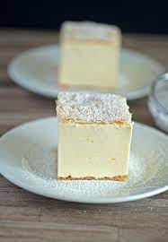

Krempita

Opis
Ne tako klasicna italijanska krempita. Bez mnogo kalorija, jako ukusna. Pokusaj pojesti samo jedan komad. :)
Sastojci
- 6 jaja
- 6 kasika brasna
- 6 kasika ulja
- 6 kasika mlijeka
- 20 kasika secera
- 1 prasak za pecivo
- 2 pudinga od vanilije
- 0,5l vode
Postupak pripreme
Kora
- Umutiti 6 zumanjaka sa 5 kasika secera
- Dodati u to 6 kasika ulja
- Kad se secer razmuti dodati 6 kasika brasna pomijesanih sa prasom za pecivo, i 6 kasika mlijeka
- Kada se to sve umuti uliti u tepsiju koju smo prethodno nauljili te staviti da se pece oko 20 minuta na 200 stepeni C
Fil
- U pola litre vode skuvati 2 pudinga od vanilije pomijesanih sa 10 kasika secera
- Uporedo s tim umutiti sam od 6 bjelanjaka i 5 kasikak secera
- Skuvani puding vreo sipati u sam od bjelanjaka te dobro umijesati
- Umucenu smjesu preliti preko ohladjene kore i ostaviti u frzider
- Po zelji posuti staub secerom ili preliti otopljenom cokoladom